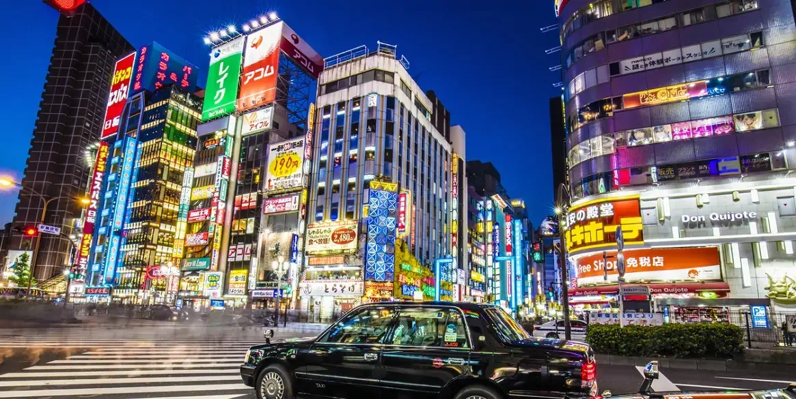
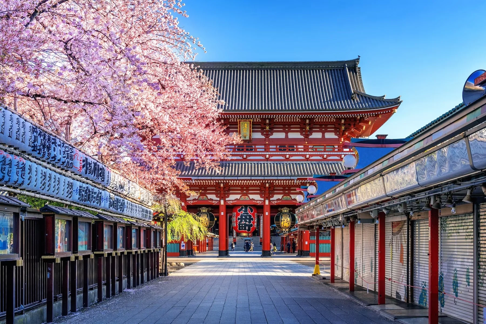
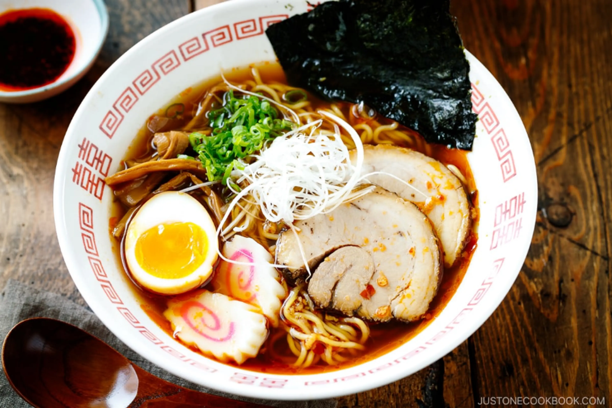

Jornadas Asiáticas: Um Diário de Bordo Pelo Continente
Bem-vindo ao nosso cantinho de descobertas. Aqui, compartilhamos não apenas roteiros, mas as histórias, os sabores e as sensações que transformaram nossas viagens pela Ásia em memórias inesquecíveis.
Tóquio: Onde o Futuro Encontra a Tradição
Tóquio é uma cidade de contrastes hipnotizantes. Em um momento você está no cruzamento mais movimentado do mundo, cercado por arranha-céus e luzes de neon; no outro, encontra a paz em um templo silencioso de séculos atrás. Venha descobrir a metrópole que nos roubou o fôlego.
A Energia de Shinjuku e Shibuya

As luzes de Shinjuku parecem saídas de um filme de ficção científica.
Atravessar o Cruzamento de Shibuya é um rito de passagem. Sentimos a pulsação da cidade sob nossos pés. À noite, as luzes de Shinjuku criam um espetáculo visual que é impossível de esquecer. É a Tóquio moderna em sua forma mais pura.
Um Refúgio de Paz em Asakusa

O majestoso Templo Sensō-ji, um portal para o passado.
Longe da agitação, encontramos o bairro de Asakusa e o impressionante Templo Sensō-ji. Caminhar pela rua Nakamise-dori, com suas lojinhas tradicionais, e sentir o cheiro de incenso no ar nos transportou para outra era.
Sabores que Contam Histórias

Uma tigela de ramen fumegante, a alma da culinária de rua de Tóquio.
A jornada gastronômica aqui é uma atração à parte. Desde o sushi fresco no mercado de Tsukiji até o ramen reconfortante em uma loja de esquina, cada refeição é uma descoberta. Não deixe de provar os doces sazonais, verdadeiras obras de arte.